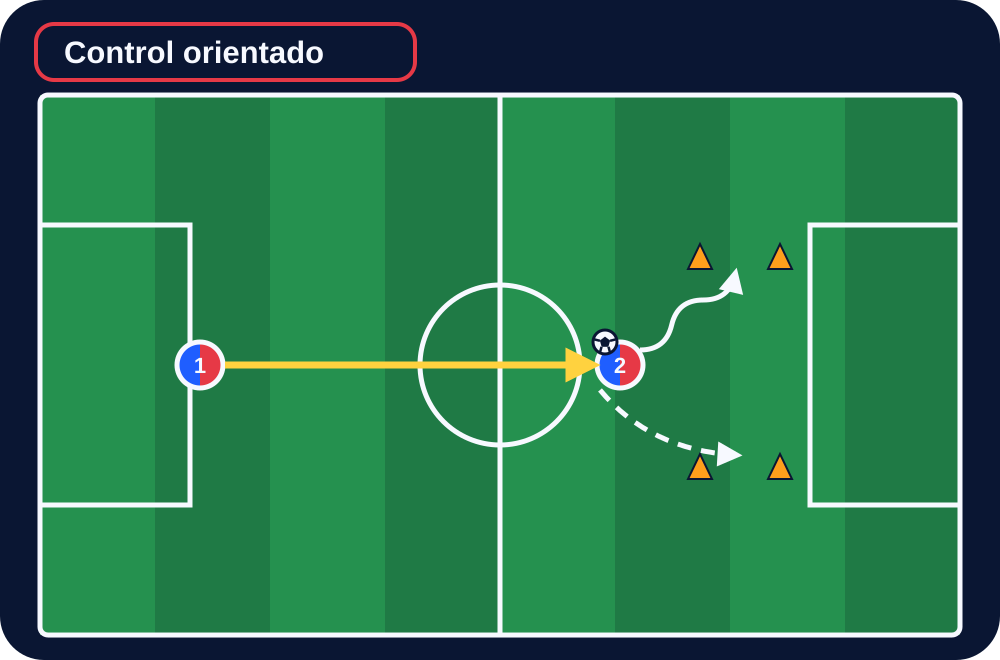

TÉCNICA
Control orientado
10 min · Principiante
Aprende a dirigir el primer toque hacia un espacio libre.
Ver instrucciones
Material: balón y cuatro conos.
Por parejas, recibe el balón y oriéntalo hacia un lateral. Devuelve el pase con el segundo toque.
Variante: utiliza la pierna menos hábil.